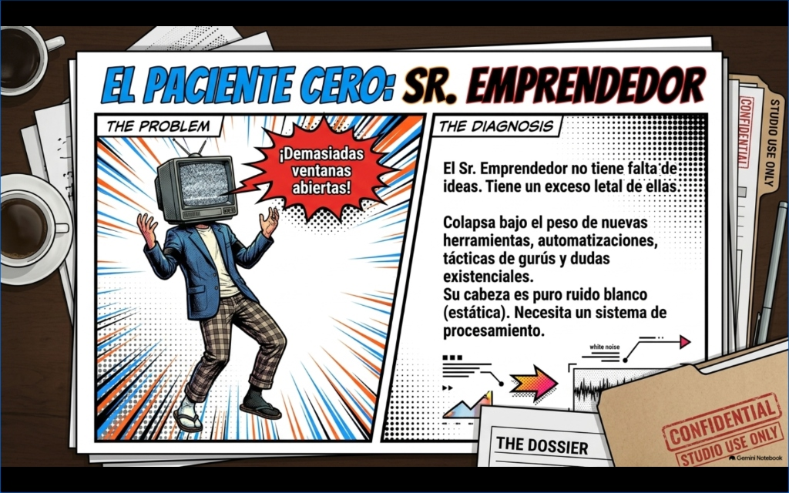
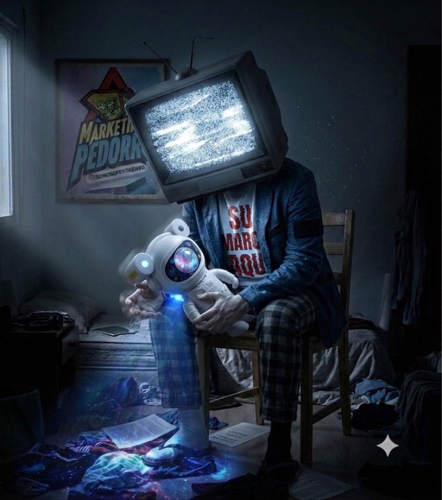

01
ACLARAR
Definir oferta, propuesta diferencial y cliente dispuesto a pagar.
No necesitás otra táctica salvadora. Necesitás entender por qué estás corriendo antes de seguir acelerando hacia ningún lado.


El silencio estratégico es el activo más escaso y valioso para cualquier negocio que quiera crecer en serio.
Definir oferta, propuesta diferencial y cliente dispuesto a pagar.
Eliminar el 90% de las modas y elegir una única palanca comprobada.
Construir rutinas de ventas estables y medir impacto comercial diario.
Ya tenés el criterio básico. Ahora es momento de aplicar el método a tu propio modelo comercial sin caer en el humo de siempre.